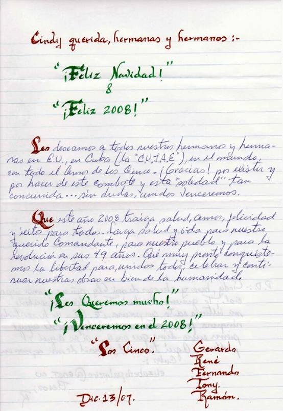
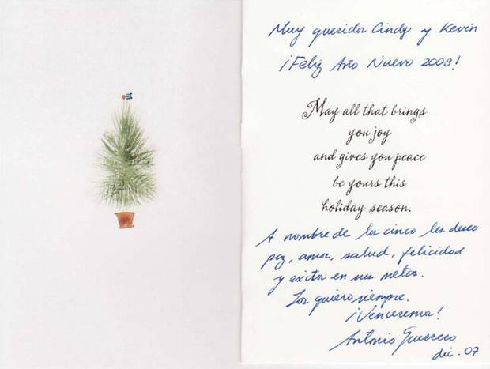

RED DEL CAPÍTULO JURÍDICO ESTUDIANTIL
EN DEFENSA DE LA HUMANIDAD
Año I Número 6 Enero/08
Notas de esta edición...
“El décimo año de nuestro injusto encarcelamiento ha comenzado”, así comenzaba una carta que Antonio Guerrero envió al Capitulo Jurídico Estudiantil En defensa de la Humanidad en octubre 2007, donde hace algunas valoraciones sobre la audiencia oral del pasado 20 de agosto ante el panel de jueces del Circuito de Apelaciones de Atlanta y la solidaridad que hacia ellos se profesa.
En cada una de las cartas que los Cinco envían a nuestra redacción se colige: valor, estoicismo, entrega, amor, ternura, y muchos otros valores que la cárcel puede hacer perder a los hombres, cuando no se han entregado a una justa causa. Los Cinco se han convertido, a decir Fidel Castro en mensaje enviados a la ANPP en “paradigmas a imitar por las nuevas generaciones”
La causa atrapa a todos los hombres con ánimo de cambiar todo lo que debe ser cambiado. En este nuevo año, debemos ponernos en pie y gritar más fuerte que nunca “Libertad para los cinco”.
SEAMOS DIGNOS HEREDEROS DE LA BANDERA DE LA ESTRELLA SOLITARIA. HAGAMOSLA ONDEAR POR SIEMPRE LIBRE.
Sigan conectados con nuestro sitio en el foro en el enlace:
http://www.vanguardia.co.cu
1. Cronología de una infamia.
2. Carta de los Cinco a Cindy Sheehan “la madre coraje”
3. Carta de Tony a la: Madre Coraje.
4. Frases a los Cinco.
Cronología de una infamia
2000
2 dic: En un articulo de primera página, Nuevo Herald escribe: “El miedo a una reacción violenta por parte del exilio cubano si un jurado decide absolver a cinco hombres acusados de espiar para el régimen de la Isla, ha llevado a muchos potenciales candidatos a pedir a la jueza que los excuse del deber cívico". El rotativo, vocero de los sectores más recalcitrantes de los grupos anticubanos de Miami citaba a uno de esos ciudadanos: "Si, tengo miedo por mi seguridad si el veredicto no es del agrado de la comunidad cubana".
6 dic: Dos de los propios encartados revelan también sus verdaderos nombres: Luis Medina es Ramón Labañino y Rubén Campa, Fernando González. Según la prensa de Miami la defensa responsabiliza a las organizaciones anticastristas, pues representan un peligro real para el gobierno cubano y que al propugnar el derribo violento del régimen de la Isla, este se vio en la necesidad de mantenerse informado de peligros y amenazas.
2001
21 ene: Primera carta de Ramón a su esposa Elizabeth, tras pasar 17 meses en el "hueco”. En los momentos más difíciles, en la soledad más extrema, cuando extrañábamos hasta la voz de un ser humano, siempre te tuve y, sin falta, eternamente siempre a mi lado, también, estaba ml madre. Estaban todos, mis hijas, mis seres queridos, y amigos, y en lugar cimero esa madre primera a la que todos nos debemos: mi Patria”
7 dic: La chancillería de Cuba envió al Dpto. de Estado norteamericano una nota de protesta por la decisión de otorgar solo cinco visas a familiares de los patriotas Se autorizan para viajar a las vistas de sentencia a las madres de Antonio, Fernando, Gerardo y René y le fue denegada en la fecha requerida a la esposa de Ramón También negaron visado a los acompañantes lógicos, de las madres, todas personas de edad.
10 dic: Los abogados de la defensa denuncian las irregularidades durante el proceso y las precarias condiciones de detención de los cinco cubanos, aspectos qua deben ser tomados en cuenta a la hora de dictar sentencias "porque han sido particularmente duras e irregulares"
12 dic: Condenan a Gerardo Hernández a dos cadenas perpetuas más 15 años de prisión. En su alegato, señala "Confío que si no es en este, en algún otro nivel del sistema, la razón y la justicia prevalecerán por encima de los prejuicios políticos y los deseos de venganza y se comprenderá que no hemos hecho ningún daño a este país, que merezca semejante condena. Pero si así no fuera me permitiría repetir las palabras de uno de los más grandes patriotas de esta nación Nathan Hale cuando dijo: “Solo lamento no tener más que una vida para entregar a mi Patria”.
13 dic: Ramón Labañino es condenado a cadena perpetua más 18 años. Pronuncia su alegato y expresa “¡Si por evitar la muerte de seres humanos inocentes, si por defender a nuestros dos países del terrorismo, y evitar una invasión inútil a Cuba es por lo que se me condena hoy pues bienvenida sea¡ "¡Llevaré el uniforme de recluso con el mismo honor y orgullo con que un soldado lleva sus más preciadas insignias¡" :
14 dic: Sancionan a René González a 15 anos y plantea en su alegato "Yo no tengo razones para el arrepentimiento... Estoy en el camino correcto. Al fin y aI cabo todo este asunto de los agentes de Cuba tiene fácil solución. Dejen a Cuba tranquila. Respeten la soberanía del pueblo cubano"
17 dic: Reafirmo mi orgullo de ser parte del pueblo cubano y de su Revolución manifiesta Fernando González en carta a las madres de sus compañeros presos. A su esposa le había escrito meses antes: "En estos momentos te tengo bien presente y estas a mi lado como has estado siempre. Estoy listo para continuar en esta lucha hasta la victoria final, sea lo que sea lo que se decida sobre mi sentencia.
18 dic: Fernando es sancionado a 19 años de reclusión. Al leer su alegato subraya: "Sinceramente, confío en que algún día Cuba no tenga necesidad de que personas como yo voluntariamente y por amor a su país y a su pueblo, vengan a este país a luchar contra el terrorismo. Todo hombre que se respete así mismo se debe antes que nada a su Patria. En los anos de presidio me acompañará siempre la dignidad que he aprendido de mi pueblo y de su historia."
19 dic : La Asamblea Nacional acuerda otorgar la condición de Héroes de la República de Cuba a Gerardo, Ramón, René, Antonio y Fernando. Igualmente otorga la Orden Mariana Grajales a las madres de los cinco patriotas y la Ana Betancourt a sus esposas. El Presidente Fidel Castro recalca que los Héroes volverán a la Patria. "Repito, reitero y enfatizo que ¡volverán¡", dice durante su intervención en la que propone denominar al entrante 2002 como Año de los cinco Héroes prisioneros del Imperio. El parlamento lo aprueba.
22 dic: En Tribuna Abierta con miles de participantes en la capitalina Ciudad Escolar Libertad, el Presidente Fidel Castro dice que la verdad de Cuba llegará a cada rincón del planeta y que en la verdad está la absoluta seguridad de que los cinco cubanos injustamente encarcelados en Miami regresarán a la Patria.
27 dic: Pronuncia su alegato Antonio Guerrero, tras oír la condena a cadena perpetua más 10 años de prisión: "Yo amo la Isla donde crecí, me eduqué... también amo a este país en el cual nací, donde en los últimos 10 años de mi vida he dado y recibido verdaderas muestras de amor y solidaridad. Tengo la certeza de que es inevitable, no solo un puente de amistad entre ambos pueblos, sino entre todos los pueblos del mundo... Nunca he hecho daño a nadie ni causado daño material alguno. Nunca he Intentado realizar acción que pusiera en peligro la seguridad nacional de Estados Unidos... Llegará el día que ya no vivamos en la zozobra del temor y la muerte, y en ese día de la historia, se verá la justicia real de nuestra causa."
31 dic: Los cinco Héroes dan a conocer un mensaje en el cual agradecen el honor que se les confirió y reiteran su compromiso con la Patria.
2002
1 ene: Envían también un mensaje de felicitación al pueblo cubano por el aniversario 43 del triunfo de la Revolución Cubana.
29 ene: Trasladados en avión desde Miami hacia la prisión de Atlanta, Georgia. Los ubican en el "hueco”.
Carta de los Cinco a Cindy Sheehan: la madre coraje
Enviado por la red de la CUJAE.
Carta de Tony a la “Madre Coraje”

Enviado por la red de la CUJAE.
Frases a los Cinco.
Tras haber colocado un mural de solidaridad con la causa de los cinco héroes en el aula que se está acondicionando para dedicarla a los cinco, hemos traído algunas de las frases dedicadas a ellos que presenta el mural.
-Confío en el Cte y sé que volverán .
-Los espero con esmero
Y con gran admiración.
Porque sé con emociona
Que algún día volverán.
-La FEU los apoya, por eso volverán.
-Al final la verdad se abrirá paso
Y entonces habrá un abrazo del pueblo y hermanos.
-La persistencia da frutos.
-¿Quien dice que las dificultades no unen a los hombres? ¿Quien dice que los pueblos no traen de vuelta a los héroes?
Somos la esperanza de estos tiempos.
Alcemos nuestras voces.
Batallemos.
RED INTERNACIONAL POR LA LIBERTAD DE LOS CINCO